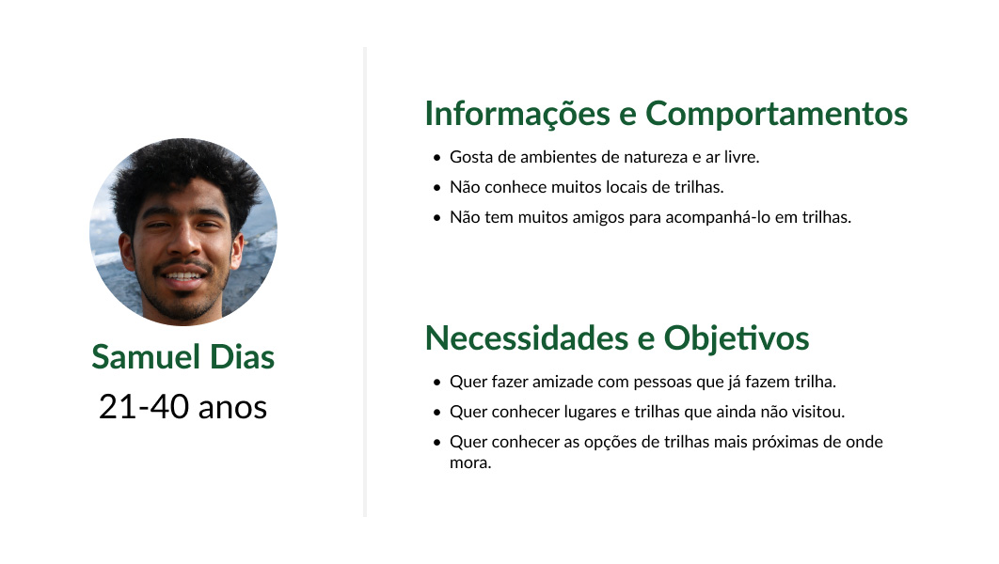
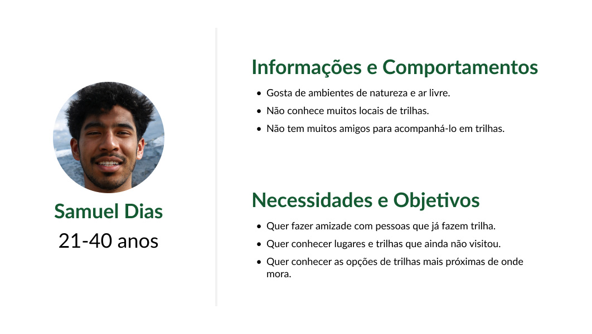
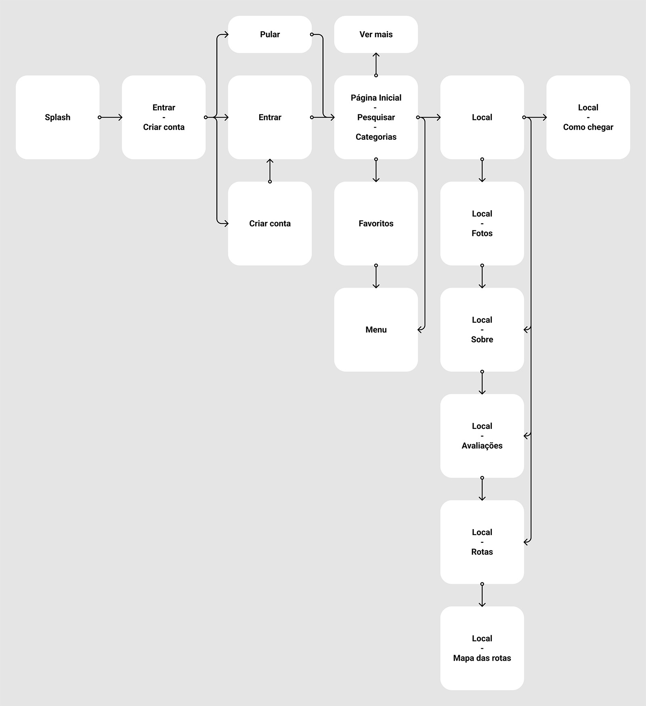
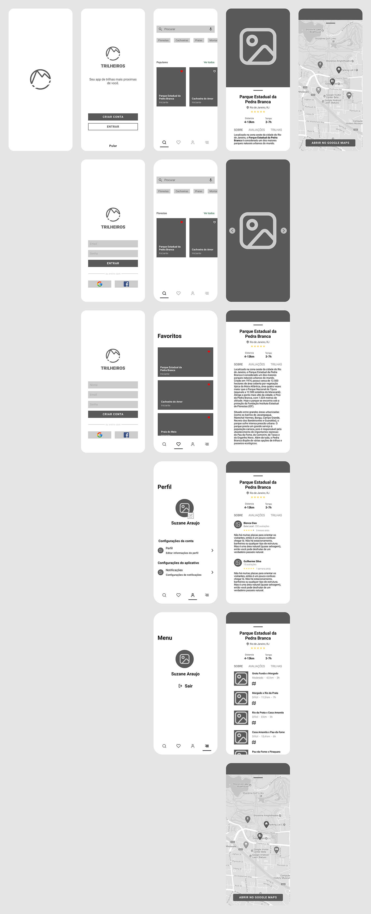
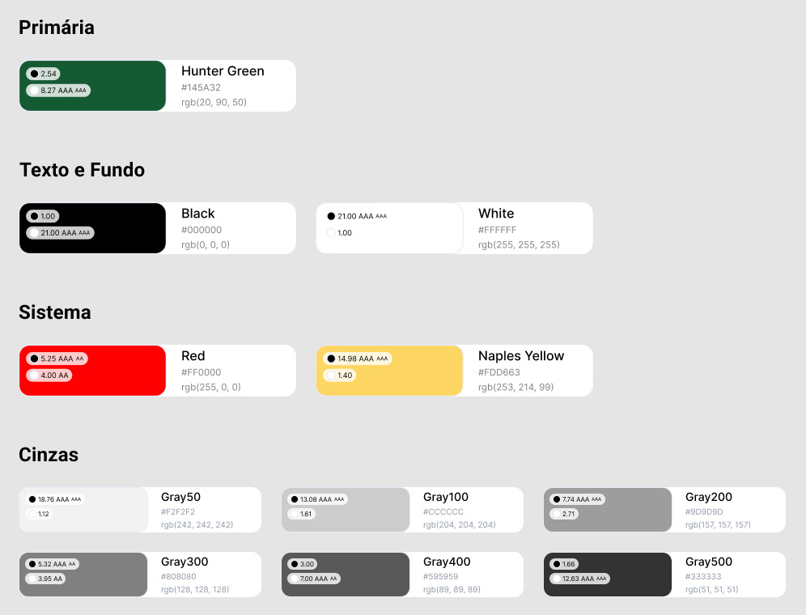
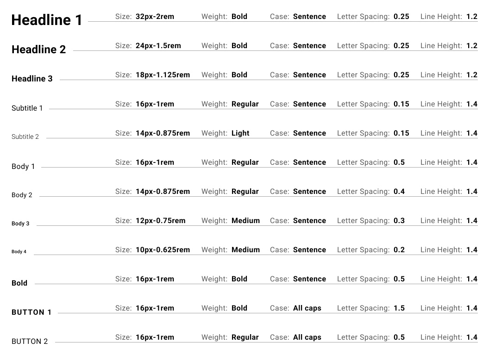
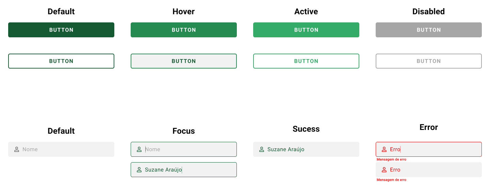
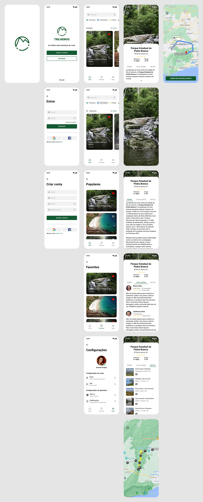

Projeto Trilheiros
Projeto de UI para um aplicativo de trilhas.
O Projeto
O projeto é sobre um aplicativo de trilhas e lugares recreativos em ambientes naturais ao ar livre. O projeto nasceu por conta da ausência de aplicativos do tipo no mercado.
Persona
Com base em Desk Research, foram criados duas personas seguindo o perfil demográfico de pessoas que frequentam trilhas ou que gostam de natureza mas que ainda não tiveram oportunidades de conhecer trilhas.
 

User Flow
O objetivo foi que o usuário consiga informações de forma simples e rápida, mas que também tenha opções de encontrar informações mais detalhas se assim desejar. Poderá criar uma conta, entrar com uma já existente ou encontrar informações mesmo sem criar uma conta. Visualizar seus locais favoritos, os mais populares e explorar categorias. Menu para configurações da conta e do aplicativo. Informações detalhadas sobre o local, como fotos, rotas de trilhas, mapa de como chegar, avaliações, etc.
Low-fidelity Prototype
Protótipo de baixa a media fidelidade com base do que foi proposto no user flow.
Style Guide
Proposta de identidade da marca e todas as informações necessárias de design para que o aplicativo possa ser desenvolvido.
Cores
As cores utilizadas no design, seguindo regras de contraste para uma melhor acessibilidade. O verde (Hunter Green) como a cor primária e de identidade da marca.
Typography
Roboto foi escolhido como a font para todo o aplicativo. Configurações de line height e letter spacing levando em consideração uma melhor legibilidade e leiturabilidade.
Botões e Formulários
Variações de botões e formulários presentes no aplicativo. Criados em components como parte do Design System.
High-fidelity Prototype
Protótipo de alta-fidelidade. Foram feitas algumas alterações e melhorias em relação ao protótipo de baixa fidelidade para que o usuário chegue ao seu objetivo passando por menos telas.
Resultado
Projeto final e pronto para testes.